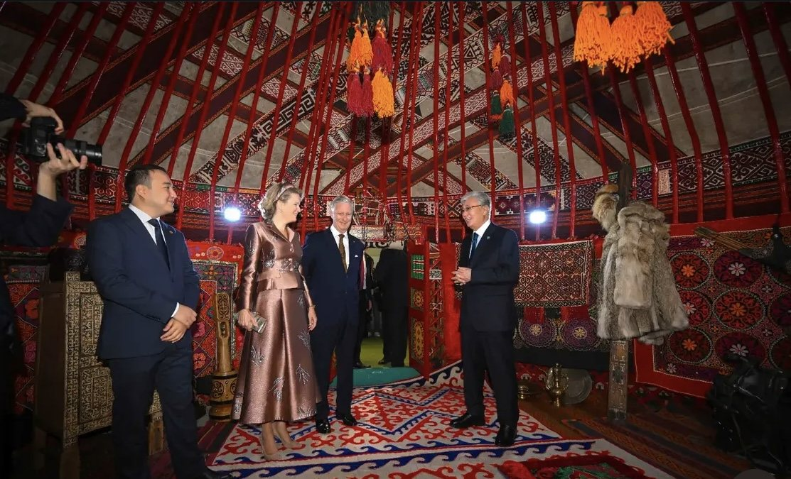
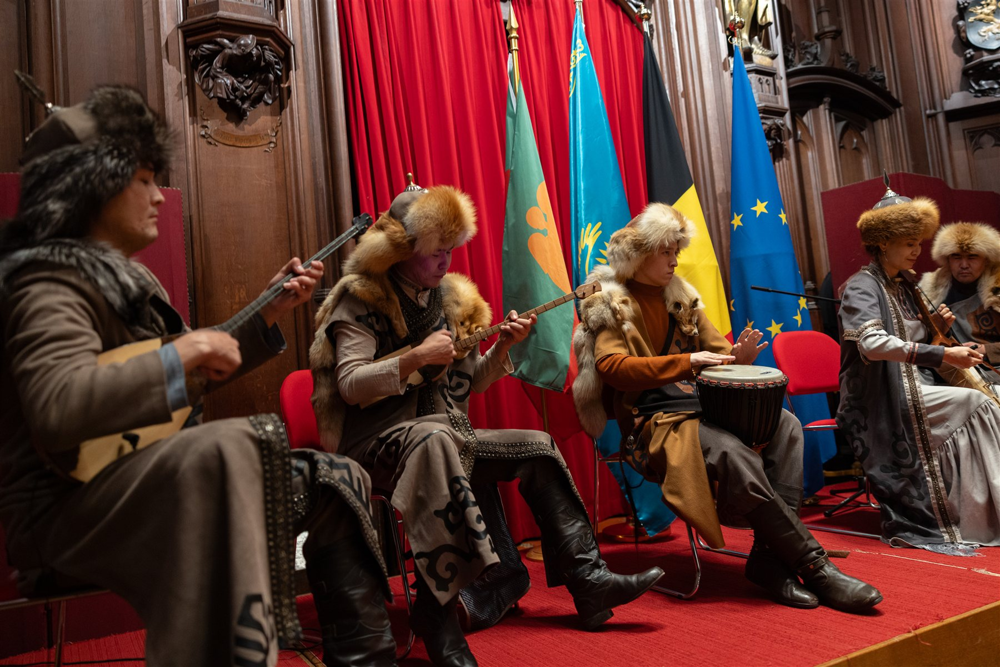
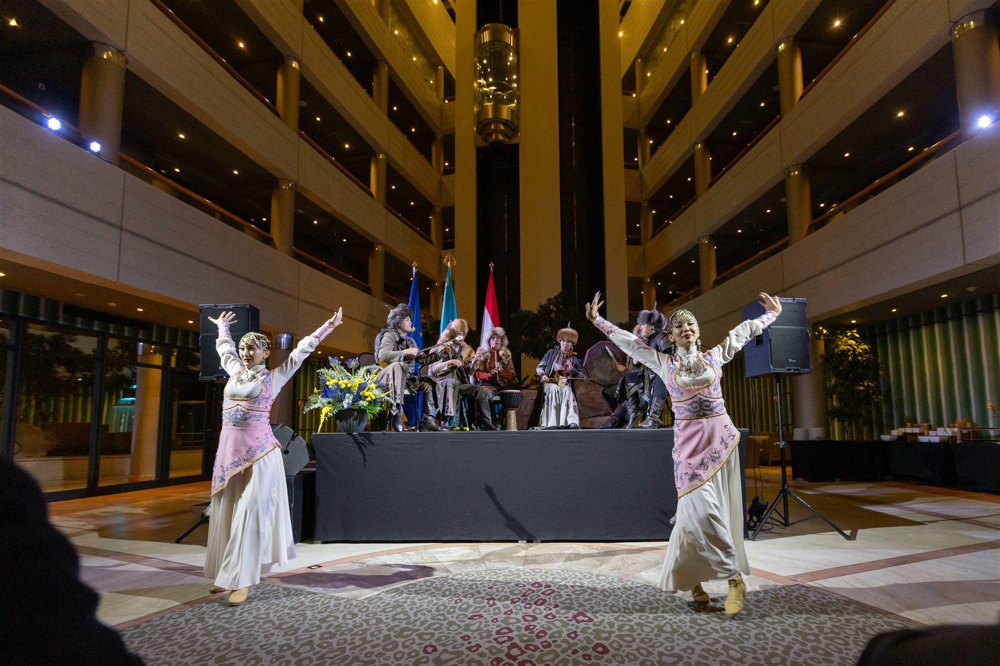
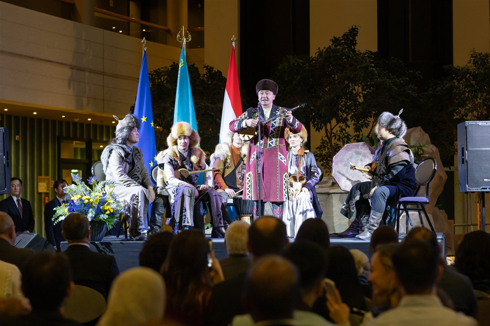
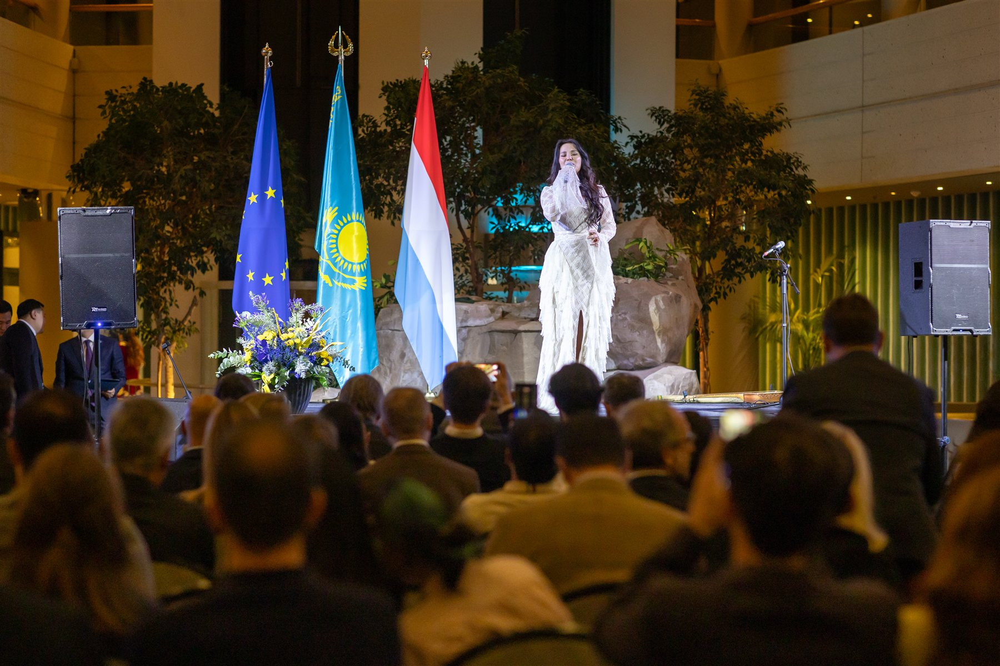
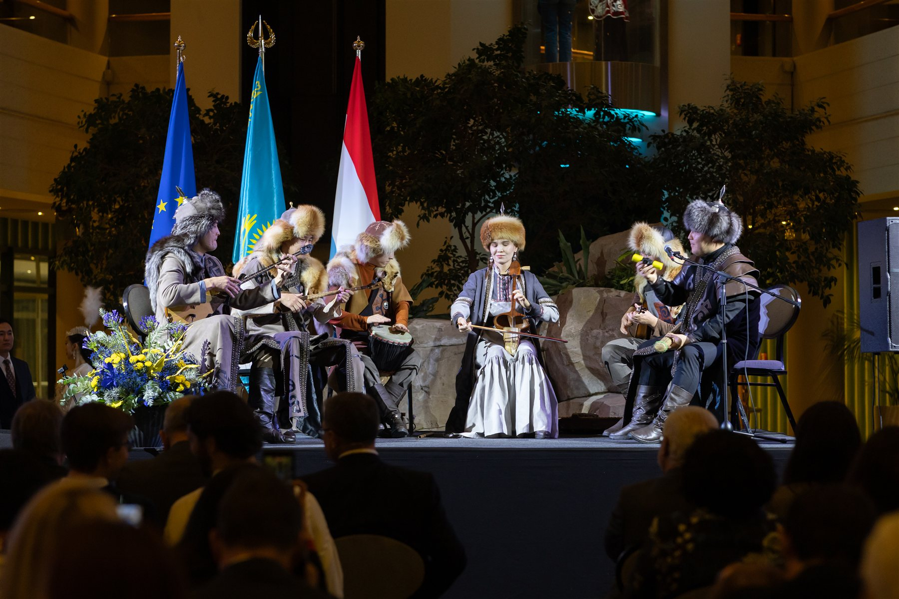
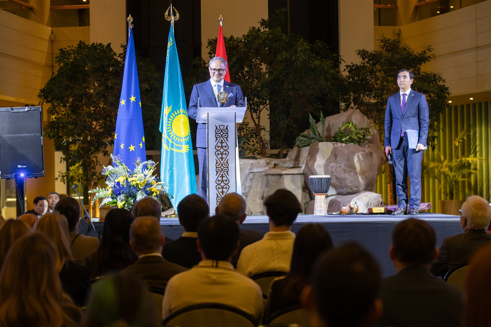
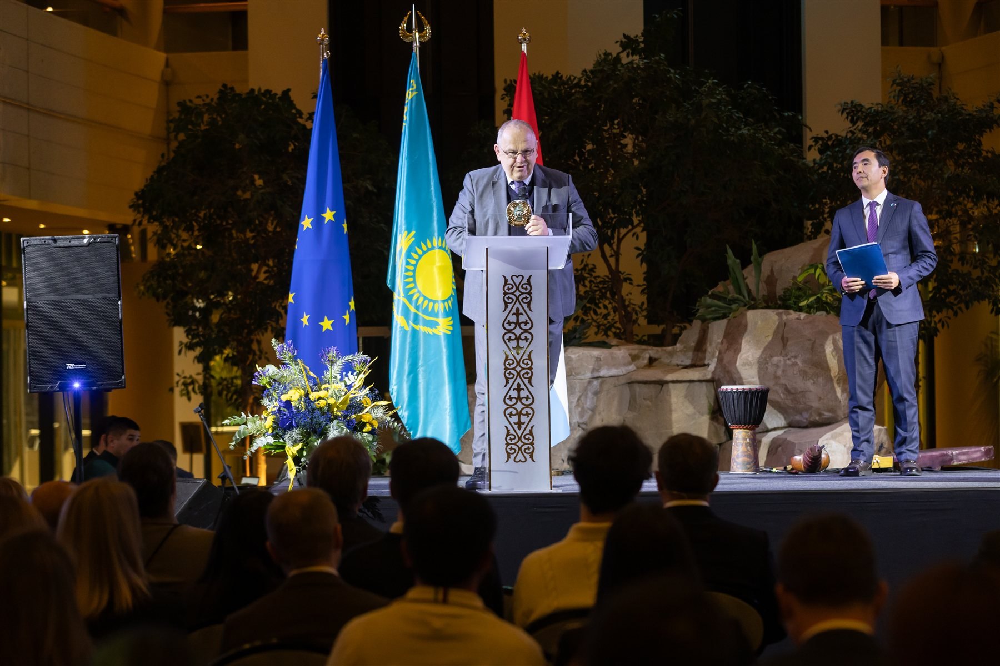
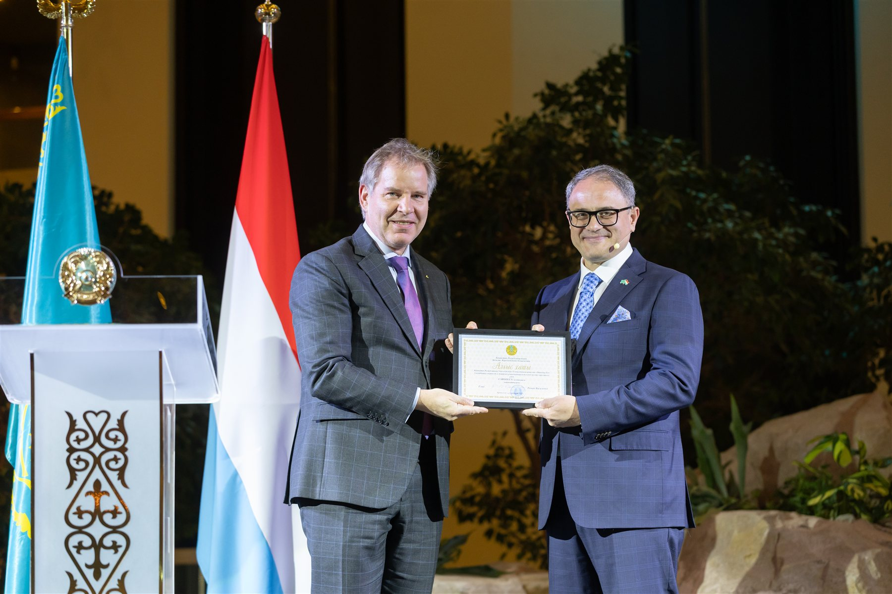
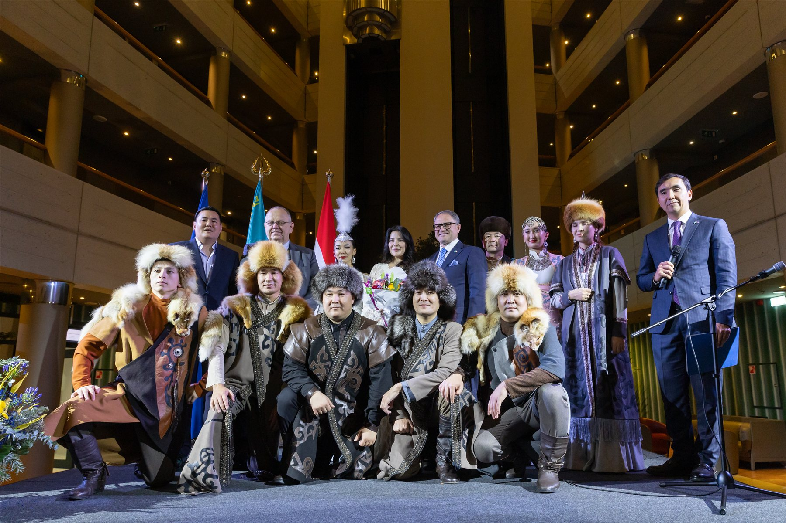

Shanyraq Fest Luxembourg
A shared stage.
A shared celebration.
A photographic look at Shanyraq Fest Luxembourg, from traditional music and dance to moments shared beneath the shanyraq.
Discover the performers, the audience, and the details of Kazakh culture that bring the festival to life.

The festival in photographs
Moments to remember.
12 photographs



















